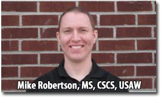

“Who Else Wants to Help Their Clients Bust Through Fitness Plateaus and Get Faster Results, Rapidly Recover from Injuries and Stay Injury-free For Life”
Discover the Secrets to Fixing Muscle Imbalances Without Ever Leaving the Comfort of Your Own Home!
My name is Rick Kaselj. I’m a world-renowned exercise and injuries expert and international fitness presenter. I have written industry leading exercise injury manuals, numerous articles that have appeared in fitness association magazines and taught over 256 presentations to 5021 fitness professionals across Canada and the USA. (You can learn more about me and see a photo of me below.)
… But before I tell you all about me and how I can help you get your clients better with faster results, and keep them injury free for life, check out what all of these fitness professionals have to say about Muscle Imbalance Revealed:
“It’s Truly a Gift that Keeps on Giving”
“Many trainers, especially myself, lack in the area of spotting technique and muscle imbalance issues with clients. In fact, I realized from MIR that by not addressing these imbalances, I was just exacerbating them each session! Muscle Imbalances Revealed gave me the foresight to spot things like tight hip flexors, which would help increase the neural drive to one’s lower body, which will help them lift more! That is just the tip of the iceberg of information found on these valuable DVDs. You will immediately become a more informative trainer in your practice after just one view of these DVDs (I view them all the time though! It’s truly a gift that keeps on giving).”
Brian H. Mahoney
The Fitness Club at Eleven Madison Avenue
New York, NY, USA
PlusOne.com
“Missing Link When it Comes to Evaluation..”
“The Muscle Imbalances Revealed DVDs from Rick has been great. What I learned on the DVDs was the missing link when it comes to evaluation and eventual treatment of my clients planning for patients with muscular dysfunctions.”
Ara Sakayan PT, ATC, CSCS
Physical Therapist and Athletic Trainer
Former New England Revolution Therapist / Trainer
“…Helped Me Out Immensely.”
“I have been in contact with Rick for only a few months now, but his Muscle Imbalances Revealed DVDs and blog have really helped me out immensely. He has a way of bringing his knowledge across very efficient and effectively. His way of systemizing muscular imbalances is something I have been looking for for a long time. ”
Rex Kanis CSCS, BA, CPT, C-FT
“This has been an Eye Opener…”
“My favorite session in this series was the session on Mobility & Muscle Imbalances by Bill Hartman. I had heard a lot about mobility in the last few years, but I did not quite understand the difference between mobility and just doing stretches. This session cleared it up. One point that stood out is that when we lack extension in the proper places, our bodies will steal the range of motion from somewhere else. This has been an eye opener in that it has helped me focus on doing exercises ‘correctly’ verses casually going through the motions, thinking I am doing something good when I am actually stressing the wrong body area. The session is also quite educational in helping one to understand where they are losing their mobility from. I agree that the points are areas of my weakness and I am working on them with a vengeance as I am in my 50’s and not getting any younger. I am combining many of these mobility exercises presented in the DVD with some rolfing and I am getting some range of motion back that I forgot that I ever had.”
Jon Webb
Insurance Adjustor and Fitness Enthusiast
Colfax, CA
“Muscle Imbalances Revealed has Undoubtedly Filled the Gap I Had.”
“There is a wealth of information on treating injuries in my area from the medical field, as well as rehabilitation care from the physical therapist. However, the practice of “Corrective Exercises” and Assessments for Functional Fitness is still relatively new at the Personal Trainer level. Even at the institutional level, the bridge between Sports Medicine and Collegiate Sports Departments is sorely lacking. The complete program of Muscle Imbalances Revealed has undoubtedly filled that gap me. I now have the knowledge and practical tools which I can quickly apply in a top-notch comprehensive training program. I have tested these in the gym and on the field, and can attest to the effectiveness of the MIR. My wholehearted thanks to Rick Kaselj and all the contributing experts of Muscle Balances Revealed, and the updates which are an added bonus.”
Luis Arrañaga, CST-KS, CKT
Strength Trainer; Kettlebell Instructor
Mexico City, Mexico
Cst-Mx.com
“Muscle Imbalances Revealed Program has been instrumental with our athletes.”
“The Muscule Imbalances RevealedProgram has been instrumental with our athletes. When looking at asymmetries and synergistic dominance it has helped our entire training team. Thanks Rick for your insight and the team you put together on this project.”
Shannon R. Wallace, Jr NASM-CPT,CKT,CNT
Under Armour Combine 360 Certified Trainer
368athletics.com
“A Necessary Addition to Any trainer’s Collection.”
“Muscle Imbalances Revealed is a great product and a necessary addition to any trainer’s collection. In my experience, many new trainers lack a fundamental understanding of anatomy and dealing with muscle imbalances. This product goes into nice detail and gives you good cues to watch for, keep your clients injury free, and get them to where they need to be. As a bootcamp owner and trainer, I continually utilize the information I acquired in Muscle Imbalances Revealedduring my boot camp sessions, so that my members can enjoy health and fitness injury free.”
Josh Saunders, BSC, CSCS
Group Fat Loss and Strength and Conditioning Specialist
The Bootcamp Effect
Langley, BC
The BootcampEffect.com

“Whole New Perspective”
“With Muscle Imbalances Revealed, I have learned to look at the way the body moves with a whole new perspective and learned some new great assessment tools.
I now have a greater understanding of how the body moves.”
Kristyn Mastroianni
Certified Personal Trainer
Coventry, CT
“The Presentations Were Easy to Watch”
“I work with an older & port rehabilitation clientele so this course was handy for each and every client.
I was very happy with the presentation of the course and it was great to be able to have all the video presentations on my iPhone so I can review the information at a later time.
The presentations were easy to watch and the content was great.
Great job… thanks!”
Cathy Dreyfus
Personal Trainer
Newark, DE
“Big Thank You to You and the Team on PuttingOut Such a Great Product”
“I just want to say a big thank you to you and the team on putting out such a great product. The hip and shoulder are very complex and the information given throughout the presentations is exactly what I was looking for and something that can always be referred to. I have applied the information on myself and my clients with great success. I recently broke my fibula and dislocated my ankle, and the progress I have made with mobility in both my ankle and hip is amazing. Keep producing what you do best.”
Shannan Maciejewski
Personal Trainer
Australia
“Every Fitness Professional Should Have this in Their Arsenal”
“Rick, thanks for creating Muscle Imbalances Revealed…honestly, it’s one of the most comprehensive injury-prevention and fitness programs available. You were able to effectively link the fitness results that clients and trainers focus on and the critical injury-prevention and imbalances necessary to achieve those results.
Not only has this made me and my staff better trainers, but we can be more in-tune with our clients by increasing their strength and performance. In addition, this gives us an edge to continue to offer our clients the safest and results-oriented programs that continue to build my business.
This is definitely a program that every fitness trainer should have in their arsenal and not just watch once, but refer to frequently.”
Lindsay Vastola, CFT
Bootcamp Owner / Instructor
Editor of PFP Magazine
www.BodyProjectBootCamp.com
Princeton, NJ
“Valuable addition to my tool box”
“Muscle Imbalances Revealed is a valuable addition to my “tool box” when it comes to assessing imbalances throughout the kinetic chain with athletes or the general population. MIR addresses injuries that may be caused by muscles imbalances that many times get overlooked. What I liked even more was the customer services and the updates to the program that are posted in the member area. With the vast information provided by MR, Hartman, Beard, Yates, Somerset and yourself any trainer, S&C coach or PT is sure to take home valuable information.”
Brian Van Hook MS, CSCS
Strength Coach
Las Vegas, NV
VanHookTraining.com
“Great Program and a Must for Trainers and Trainees.”
“I have been exercising for some time now. Earlier I wasn’t able to understand why there is stagnation and plateau and niggling injuries in my regimen. After Muscle Imbalances Revealed, I understood the reasons and am able to help other trainees as well in my Gym. Great program and must for trainers and trainees.”
Babu Sivaprakasam
Personal Trainer
Mumbai, India
“Your Resources so Far Have Been Very Beneficial.”
“I’m a new personal trainer and I’ve always been worried about not knowing enough on injuries and how to deal with them. Your resources so far have been very beneficial.I listened to the interview below and one thing that really hit home was the difference between core stabilization and core strengthening exercises. This was just one part of his talk but the reminder was really good because now in my boot camps or personal training clients, I can make the distinction and they can appreciate the core exercises even more.Thank you for continuing to share amazing resources.”
Humairah Irfan
Personal Trainer & Group Fitness Instructor
Edmonton, Alberta, Canada
Fit Body Bootcamp Edmonton
Problem: Not Getting the Results Your Clients Want
As a fellow fitness professional, I know we focus on strength, flexibility and cardiovascular techniques with our clients in order to help them reach their goals.
I’ve done this as well but what I was noticing was I was not getting the results my clients wanted.
Therefore I headed back to school to get my Masters Degree in Exercise Science with a focus on corrective exercise and therapeutic exercise.
I hoped this additional education and learning would be the missing piece to getting the results my clients were looking for.
Even after all this learning and money, I was getting better results, but still was not fully helping my clients overcoming injuries, busting through fitness plateaus and staying injury-free.
I began to research what I was missing from my exercise toolbox when it came to getting the fastest and best results for my clients.
Solution: Muscle Imbalances
The missing piece to my exercise toolbox was muscle imbalances.
I am not just talking about stretching what is tight, strengthening what is weak or doing some corrective exercises.
Muscle imbalances are much more complicated than that.
Just focusing on three techniques of exercise will limit how fast your clients will reach their desired results, how quickly they will recover from an injury – and it won’t help them prevent injuries.
It is important to expand from those three basic exercise techniques in order to get faster results, increase the speed of injury recovery and prevent injuries by moving your clients from imbalanced to balanced.
That led to Muscle Imbalances Revealed.
Problem: Courses and Conferences are Expensive!
Fitness education is expensive.
Just a few weeks ago, I attended a weekend fitness course and it cost me $2000.
Ouch!
The cost of the course was only one of my expenses.
I also had to pay for:
– flights
– taxi to and from the hotel
– hotel
– meals (breakfast, snacks, lunch, dinner and drinks)
– I had to take time away from work and clients
When all is said and done, it cost me about $3200.
I have to say the material was good and I learned a few things but I could have learned all of it through a video presentation.
Solution: Amazing Value!
The amazing value is a huge reason why I love video presentations.
I have been teaching live fitness education courses since 1999.
The biggest thing I love about video presentations, outside of convenience, is the cost of people attending a video presentation.
With video presentations you get all the benefits of attending a live course or conference, at a fraction of the cost.
You get excellent information with a focus on assessment and exercises, not to mention you have the presentation so you can watch it over and over again.
Problem: Who Has Time to Read Research Articles, Huge Textbooks or Go to Seminars?
I know you are busy.
Fitness professionals work long hours and it is difficult to find the time or energy to sit down and read a textbook on exercise physiology or to look up the latest research articles.
With our weekdays full of training clients or leading boot camp groups, it is difficult to find the desire to head to a conference or a course on the weekend.
Going to all those courses and conferences on the weekend leads to less time with family, friends and fun.
Who does not want more time with family, friends and having fun?
Solution: Sitting Back and Learning
Last year, I discovered a way of sitting at my computer and having someone else teach me tips and tricks to help my clients.
The way this was done, was through webinars.
I know you may be asking, “What is a webinar”?
A webinar is an online video presentation that is focused on great practical information which you sit back and view on your PC, Mac, iPod or iPad.
I watch them on my 7 year old PC.
You are able to view the video presentation off the internet or download it to your computer for viewing at another time.
Each webinar contains an outline of key information about muscle imbalances, images explaining muscle imbalances, videos of exercises and assessment recommendations.
With each of the webinars you get a video recording, audio recording and handout that will work on your PC, Mac, iPod or iPad.
I know you might be thinking, “I have watched webinars before and could not download or burn the webinar to a DVD”.
With most fitness education video webinars, you have to sit in front of your computer and watch the full webinar.
Often times you lose the internet connection to your computer and you have to start all over again.
This is very frustrating, inconvenient and a waste of time.
Plus, most webinars you can’t download, you can’t burn to a DVD, and you can’t skip to the best part.
This is NOT the case with Muscle Imbalances Revealed. You can download, burn and skip to any part in the 5 lower body webinars and 2 bonus upper body webinars.
Problem: I Attended a Free Webinar and it Sucked!
I was at a fitness site and watched a free webinar.
The free webinar did not have much substance to it.
I have watched numerous free webinars and have yet to watch one that was any good.
I find free webinars don’t have content that you can use to help your clients.
They are often full of useless information or just promotion of more expensive products.
Solution: Content Rich Information
The Muscle Imbalance Revealed webinars are content rich webinars, that will help you get better results for your clients in 6 days!
You will get tons of information on muscle imbalances for the lower body and exercises that you can use with your clients right way.
The 6 presenters of the 7 webinars all provide you with a little background information but focus on assessment, exercises and tips & trips to help you get better results for your clients.
Problem: No One Person or Profession Can Do it All
I would like to think with all the schooling I have done, the conferences I have attended, the textbooks I have read and the research papers I have gone through, that I would know it all when it comes to muscle imbalances. It is not possible for one person to know everything when it comes to muscle imbalances or even one profession to know all there is when it comes to muscle imbalances.
Solution: 6 Experts in Muscle Imbalances from 6 Professions
Instead of just revealing my tips and tricks when it comes to muscle imbalances, I sought out 5 other experts in the area – Mike Robertson, Bill Hartman, Eric Beard, Kevin Yates and Dean Somerset.
As I was searching out experts in the area, I discovered no one person or profession has all the answers when it comes to muscle imbalances.
In Muscle Imbalances Revealed – The Lower Body System you get the perspective of a physical therapist, strength coach, corrective exercise specialist, massage therapist, kinesiologist, post rehab specialist and personal trainer.
In Muscle Imbalances Revealed they share their knowledge, experience, exercises and tips & trick when it comes to muscular imbalances of the lower body. This is all done with downloadable video webinars.
Problem: Misplacing Your Files
Isn’t it frustrating when you can’t find where you saved your videos on your computer?
You end up spending hours looking for them. You have no way of getting another copy.
Solution: You Have Lifetime Access to MIR
You don’t have to worry about that with Muscle Imbalances Revealed. All the video presentations, handouts, and updates are there when you need them today, or even in a few years’ time.
There are no time limits or additional fees to your membership.
You have lifetime access to the membership area of MIR where everything is there for you to access.
We are always updating MIR and you get all those updates free.
Problem: Has this Program Helped Anyone?
With every new health and fitness education product that comes out, you wonder if it is going to work.
Solution: MIR has Helped Well Over 621 Health & Fitness Professionals from Around the World
MIR has helped health and fitness professionals from around the world.
Here is where some of the health and fitness professionals are from that have been helped by MIR:
If you want to see what other health and fitness professionals like you say about Muscle Imbalances Revealed, scroll down and read the testimonials.
Summarizing the Key Benefits of
Muscle Imbalances Revealed:
- You can watch the video at your own pace and go back to key points at your convenience
- You can watch the webinar on your own computer, iPad or iPod
- You don’t have to take time off work and spend money to attend a course or conference
- You can watch the webinar when it is convenient and best for you
- You can download the webinar to your iPod or iPad and watch it while waiting for a client
- You can learn new fitness education information from the convenience of your home
- You can view the webinar on a PC or Mac
- You can download an MP3 of the webinar and listen to it in your car, on your iPod or during your workout
- An affordable way of learning new detailed and researched backed information for yourself, your clinic or fitness team
- No time is wasted driving or flying to courses or conferences
- No expensive and overpriced course or conference fees
- Lifetime access to all of the fitness education webinars
- Unlimited access to all of the video presentations
- This is not like most conferences where you get a hodge podge of information. MIR is focused, practical information that will help you with your clients right away
“Highly Recommend You View!”
“Muscle Imbalances Revealed was an excellent resource that I’d highly recommend you view. And I think it’s particularly valuable because you can conveniently watch it from the comfort of your own home or office without having to spend hundreds of dollars on travel and accommodations while taking time off from work.”
Eric Cressey
Premier Strength Coach for Baseball Players
EricCressey.com
“Well Designed Website That Overviews a Great Topic”
“Muscle Imbalances Revealed is a well designed website that overviews a great topic: muscle imbalances of the shoulder, lumbopelvic region, and lower extremities. The program discusses muscle imbalances, dysfunctions that you’ll see, and treatment strategies from some top notch names in our industry: Mike Robertson, Bill Hartman, Eric Beard, Rick Kaselj, Kevin Yates, and Dean Somerset.”
Mike Reinold
Physical therapist, athletic trainer, and certified strength and conditioning specialist
Assistant director of medical services of the Boston Red Sox Baseball Club
MikeReinold.com
“The Entire Industry Looks to Rick Kaselj”
“The entire industry looks at Rick Kaselj as the “muscle imbalance solution” expert and that’s because he speaks on the subject and has written and published more info on it than anyone else.”
Bedros Keuilian
Personal Trainer Success Coach
PTpower.com
“When it Comes to Treating Injuries Through Exercise, Rick is ‘the Man'”
“When it comes to treating injuries through exercise, Rick Kaselj is ‘The Man’ … and he can show you how to add some nice extra income to your training business by suckin’ in lots of new clients from this practically untapped niche.”
Chris McCombs
Personal Trainer Success Coach
KickbackLife.com
“I Do Endorse .. Muscle Imbalances Revealed”
“Anyone that knows me, knows that I have been a web presence for quite a while, and knows I don’t endorse many people. I certainly don’t endorse products with outrageous fat burning claims, or millionaire attainment secrets, or gaining muscle in 5 days…but I do endorse self-improvement and continuing education. Making fitness professionals better and more respected in this field starts with good-hearted role models and tools that provoke the learning process. Muscle Imbalances Revealed does exactly this.”
John Izzo
Leading Fitness Educator
TrainerAdvice.com
“Unique Insight”
“Rick provides, and his unique insight is in my opinion perfect for 1) physicians and personal trainers who are trying to address mysterious aches and pains in their patients and clients and 2) people who are at a fitness plateau because they keep getting injured.”
Ben Greenfield
Triathlon Coach
BenGreenfieldFitness.com
“Comprehensive Way of Reaching Trainers.”
“I found the ideas presented in Muscle Imbalances Revealed a comprehensive way to reach trainers who are just starting out, right up to those of us who have been at it for years. I see this as a great tool for trainers and strength coaches. If this is an area where you are lacking, I suggest you check this out.”
Maria Mountain, MSc
Owner/Strength & Conditioning Coach
HockeyTrainingPro.com
London, Ontario
“So Much More Than The Name Implies”
“Wow, I have to say that Muscle Imbalances Revealed is so much more that the name implies.
It’s so jam packed with info that I’ll use it as my ‘go to’ resource. I run fitness boot camps and my clients always have nagging injuries that I have to work around. I’ll use this resource to provide practical advice and exercises that will prevent injury as well as aid in their recovery of previous injuries.
I feel more confident in providing fitness advice to prevent and rehab injury with this resource in my arsenal.
Thanks Rick for the clear and concise way of presenting all this information.”
Shawna Kaminski
Female Fat Loss Over 40 Expert
Owner/Operator of Calgary NW Adventure Boot Camp
FemaleFatLossOverForty.com
“Important Tool in My Repertoire”
“Muscle Imbalances Revealed by Rick Kaselj is complete and is an important tool in my repertoire of works in practice. It is easy to use and understand. The various presentations allow us to touch a wide variety of muscle imbalances that may apply to both a general sports population. Its content will be definitely very helpful to me to optimize the training of my clients.”
Xavier Roy
Montreal, Quebec
Performance Specialist
Xrperformance.blogspot.com
“Addressing Muscle Imbalances is Paramount Importance when Training Athletes.”
“Addressing muscular imbalances is of paramount importance when training athletes. Muscle Imbalances Revealed provides the background, assessments, training strategies, and specific exercises to restore balance across the lower extremities, lumbopelvic area, and shoulders, and therefore equips you with the knowledge you need to help prevent the most common sports-related injuries. Even better, you can benefit from all the content from the comfort of your home.”
Kevin Neeld
Hockey Strength and Conditioning Coach
KevinNeeld.com
“Must Have Tool”
Josh Carter
Personal Trainer
Los Angels, CA
CarterFitness.com
“Full of Quick Tips and Tools that I Can Use Right Away with My Clients.”
Andy Pratt
Personal Trainer / Studio Owner
Newfoundland, Canada
WarriorBuilt.com
“Fantastic Product!”
Dr. Peter Osborne
Chiropractor
Clinical Director, Town Center Wellness
Diplomate with the American Clinical Board of Nutrition
Houston, TX
GlutenFreeSociety.org
The Complete Muscle Imbalances Revealed System
Component #1 – Muscular Imbalances in the Hip & PelvisIn this information packed video webinar, Mike Robertson will introduce you to the importance of the hip and pelvis, plus why so many fitness professionals overlook the hip or pelvis when it comes to injuries and fitness plateaus. During this presentation you will discover the four keys to proper hip function, what Mike Boyle missed in his joint-by-joint stability/mobility approach, the two muscles that are key for better hip function, what Dr. Stuart McGill is missing from the front plank assessment and 3 phases of pelvic stability and alignment. |
Component #2 – Mobility & Muscle ImbalancesThis video webinar is full of rarely discussed details about mobility. Most fitness professionals have no idea of what mobility is, how to assess it or exercises for mobility. This presentation alone will show the missing exercises that most fitness professionals are not doing. These missing exercises can drastically help their clients reach their fitness goals. During the video webinar, Bill Hartman will teach you who should be and who should not be doing mobility exercises, why mobility is not flexibility, 4 exercises to help mid-back mobility and 3 hip mobility assessment tests. |
Component #3 – Maximizing Strength & Stability of the KneeThe knee is catching up to the back when it comes to injuries and pain. It is important to address the knee if there are any muscle imbalances, injuries or previous injuries in the ankle, knee, hip or lower back. In this video webinar, Rick Kaselj will go through some shocking numbers when it comes to knee injuries, an effective exercise program to prevent knee injuries, a comprehensive program for the recovery of knee injury and a few tidbits about leg extension and the knees passing the toes. |
Component #4 – Identifying Muscular Imbalances in the Lower BodyIf you have made it this far, you know muscle imbalances are vital! In this video webinar, Kevin Yates will give you greater insight into the importance of muscle imbalances, how to identify them, why to identify them and a few assessments on how to do so. Some of the key points in the presentation that you need to make sure you watch for are common lower body injuries due to muscle imbalances, list of injuries due to muscle imbalances, common areas of muscle imbalance and specific assessments for muscle imbalances. |
Component #5 – Addressing Muscular Imbalances in the Lower BodyYou have an idea of the importance of muscle imbalances and how to find them. Now what do you do? Kevin Yates goes through a bunch of exercises that help target muscle imbalances that you can use right away. A few of the highlights of this presentation are 3 corrective strategies for the squat, 4 correction strategies for the lunge and stability ball exercises for muscle imbalances. |
Component #6 – Addressing Muscular Imbalances in the ShoulderThe shoulder is a common area in the upper body where muscle imbalances fester. These muscle imbalances are a big reason for upper body injuries, not getting maximal fitness results and fending off future injuries. Eric Beard will go through these with you, plus 4 components of an injured scapulae, 6 causes of shoulder impairment, 4 effective test for the shoulder and so much more. |
Component #7 – Fascia, Exercise & Muscle ImbalancesJust like mobility, fascia is often ignored by fitness professionals. If one knows about fascia, often times they don’t know what to do about fascia. Dean Somerset takes care of this for you. In Dean’s presentation he will challenge the anatomy you have learned, explain to you why fascia is important, what you can do about fascia and exercises to address fascia. This is information that you will not find anywhere else. |
Component #8 – Muscle Imbalance Exercises for the Lower Body (Value – $89)I received a lot of feedback on Muscle Imbalances Revealed from all the health and fitness professionals around the world, and the number one thing they wanted was MORE EXERCISES. For MIR2, we added more exercises that help address muscle imbalances in the lower body. This is a live presentation where I went through well over 50 exercises to address muscle imbalances in the lower body. Some of them are unique and different but very effective. You get the video of the presentation and a handout with pictures of all the exercises. |
Component #9 – Fascia, Exercise & Muscle Imbalances – Part 2 (Value – $68)The video presentation that received the most feedback and response was the video on fascia. You can see it below (it is called Fascia, Exercise & Muscle Imbalances). Dean Somerset has re-done the one below and added some amazing new information. Plus he has added a second video presentation on fascia. He specifically talks about Training the Myofascial Lines for Back Injuries. Fascia is not commonly taught to fitness professionals and when it is, it’s often explained vaguely and without detail. In Fascia, Exercises & Muscles Imbalances Part 1 and 2, the fascia is explained in great detail. But better yet, he explains how you can address fascia with exercises in order to get better results with your clients. |
Component #10 – Naked Running (Value – $27)There has been a lot of talk about barefoot running in the fitness industry of late. You maybe wondering if it is a good thing to do or not. You may have seen all those people wearing those funny slipper toed shoes and wondered if they work or are just hype. I have the answers here for you! You have to check this out! |
Component #11 – Corrective Exercises for Performance
|
Component #12 – DB Mobility WorkoutKevin Yates of MIRL takes you through a routine that he gives his clients when it relates to mobility. Kevin targets lower and upper body mobility. The exercises are simple and easy for your client to do and only involved a set of dumbbells. I know this video will give you a little routine that you can give your clients and a number of exercise ideas that you can integrate into your clients and your program. |
Component #13 – Strategies to Improve Hip & Ankle MobilityThese two videos are going to be hit for any therapist. Dr. Erson Religoso III shows you how to assess mobility when it relates to the hip & ankle, follows it up with manual therapy techniques that you can use to open up the hip & ankle, highlights some other techniques you can use to improve mobility and wraps up with home exercises that your client can do to build on the manual therapy techniques that you have used. |
And today, you have the opportunity to get the entire 9-component, $602 package for a single, one-time discounted payment of:
YES! Give Me Instant Access to MIRL3Online Special $39 |
Let’s Get to Know the Creators
of Muscle Imbalances Revealed:

Mike Robertson, MS, CSCS, USAW is the co-owner of Indianapolis Fitness and Sports Training and the President of Robertson Training Systems in Indianapolis, Indiana. Mike has made a name for himself as one of the premier performance coaches in the world, helping clients and athletes from all walks of life achieve their physique and sports performance goals.
Mike received his Masters degree in Sports Biomechanics at Ball State University, where he was involved in varsity strength and conditioning and research in the human performance lab. He is also an accomplished powerlifter, having competed at the National Level and coached at the World Level. He’s authored hundreds of articles and the Bulletproof Knees Manual, and co-created multiple DVD sets (The Single-Leg Solution, Assess and Correct, Inside-Out, Magnificent Mobility).
Bill Hartman, PT, CSCS, USAW is the co-owner of Indianapolis Fitness and Sports Training, and has been a physical therapist and sports performance coach in Indianapolis for over 17 years.
As a physical therapist, Bill has worked in a variety of settings with a specialization in orthopedics and sports medicine. He has received advanced training in the treatment of spinal disorders, treatment of lumbo-pelvic disorders, shoulder rehabilitation, knee rehabilitation, core conditioning, and treatment of soft-tissue disorders. Bill is also an Active Release Techniques Practitioner, with credentials to treat upper extremity, lower extremity, and spinal disorders.
A lifetime athlete, Bill has been competitive in the sports of javelin, collegiate football, bodybuilding, and powerlifting. He has been a contributing writer to numerous magazines and created multiple DVD sets (Assess and Correct, Inside-Out).
Eric Beard, MS, LMT, CSCS, NASM-CES, PES, CPT, has been delivering entertaining, energetic and educational presentations to fitness professionals since 2000. He is passionate about helping others succeed and sharing his expertise in corrective exercise.
Eric is currently the Senior Master Instructor for the National Academy of Sports Medicine, Adjunct Faculty for the California University of Pennsylvania and the Fitness Director at the Longfellow Sports Club in Natick, MA where he practices what he preaches as a massage therapist, corrective exercise specialist and coach to his team of trainers. He also directs the injury prevention and athletic performance enhancement program for the New England Academy of Tennis.
Eric played ice hockey and football in high school and college and still loves playing ice hockey weekly in men’s leagues. He has had his share of injuries, which gives him a great perspective to approach injury prevention and rehabilitation from.
Rick Kaselj MS, BSc, PK, CPT, CEP, CES has spent his professional career helping clients recover from injury, manage chronic conditions and prevent injury through exercise. Rick is a Kinesiologist, exercise physiologist and personal trainer who has combined his work experience and passion for research into a variety of courses and presentations for fitness professionals, Kinesiologists and health care professionals on an extensive list of exercise and injury topics.
Over the past decade, Rick has given over 277 presentations to 5300 fitness professionals across north America while continuing to work in rehabilitation centers, physiotherapy clinics, recreation centres, fitness clubs and personal training studios. Rick recently completed his Masters of Science degree focusing on corrective exercise and therapeutic exercises for the rotator cuff.
Kevin Yates, CPT is a fitness professional who has combined his work and hands-on experience as a personal trainer, sports performance coach and in physical rehabilitation to develop unique methods and corrective exercises for eliminating muscle imbalances, recovering from injuries and maximizing physical performance.
For nearly a decade Kevin has performed thousands of personal and group training sessions, helping injury sufferers, athletes and everyone in between. He has written numerous articles on muscle imbalances and has a passion for empowering fitness professionals through his courses on muscle imbalances and corrective exercise.
Dean Somerset BSs, CSCS, CEP, MES is the Rehabilitation and Medical Fitness Coordinator for World Health Club, a company with 19 clubs across Alberta, Canada. He oversees the trainer education and Post-Rehabilitation program implementation alongside over 100 medical and allied health professionals, and works to create a continuum of health and wellness for both patients and clients. His personal clientele ranges from joint replacement rehab, medical dysfunction management, weight loss, and even elite sport performance from a “function-first” training philosophy.
Here is What Fitness Professionals are Saying
About Muscle Imbalances Revealed:
“Muscle Imbalances Revealed should be in every personal trainer’s and fitness professional’s DVD library. Not only is this a great compilation of information, it is easily accessible in the webinar format.
It’s like having a private seminar in the luxury of your own home! They download fast and you can take notes on the power point handouts.
The content is delivered in an easy-to-understand manner and can be immediately applied to your clients. I have seen a lot of content over my years as a strength and conditioning coach and this product is among the best.
I recommend this product to all Kinesiologists, personal trainers and coaches wanting to reduce injury risk and improve self/client/athlete performance.”
Jon-Erik Kawamoto, CSCS, CEP
Strength and Conditioning Coach
JKConditioning.com
Burnaby, BC, Canada
“Hi Rick: I just wanted to thank you and the other contributors of Muscle Imbalances Revealed for coming up with such a great product.
This product works well with everyone we see from the rehab through the performance end of the training continuum. And it does so with relevant, useful content.
The key advantage I realized with this product was that the information could be readily applied and advantages realized almost immediately.
My athletes and I thank you!”
Chris Collins M.Sc. CSCS
Strength and Conditioning Specialist
Okanagan Peak Performance
Kelowna, BC, Canada
“This course is similar to attending a live grade A fitness conference, but from the comfort of your own home. It presents a powerful compilation of 6 expert exercise professionals sharing their years of experience and knowledge. The crossover and focus of the content helps you understand the concepts well to the point where you feel confident applying them. This course is fabulous value for the cross section of information given providing lots of useful assessments and exercises to use with your clients. Thank you for offering a comprehensive course with an expert team approach.”
Jody Kennett
Personal trainer & post rehabilitation exercise specialist
Leap Fit Training Professionals
North Vancouver, BC, Canada
“I just started to watch the Muscle Imbalances Revealed webinars…I was going to watch just a few minutes since I’m beaten up from long day of training, but it was so amazing that I ended up watching the whole thing…WOW great information!!!
I am very thrilled with what’s covered and how it’s presented.
The video reminded me the importance of the hip and pelvis relationship, once again.
I loved the details of all the assessments presented in the video and how to interpret them.
I will watch it again tomorrow…I loved it! Thank you.”
Noriko Brantley
Personal Trainer
North Carolina, USA
Problem: What if I don’t Like it
I know we all have attended a conference or course that was way overpriced and way too long.
I know we all have bought fitness education DVDs and books that taught you nothing.
You were stuck with all of it and could not do anything about it.
Solution: Then it’s all FREE
I know you will be blown away by Muscle Imbalances Revealed – The Lower Body System.
I have been in the fitness industry for 16 years, have presented hundreds of courses, read thousands of page of fitness information and have spent thousands of dollars on my fitness education.
I know there is nothing like Muscle Imbalance Revealed out there.
I know you will find the information helpful and it will help your clients reach their injury, fitness and prevention goals.
I am confident enough to say, if you complete the 6 hour Muscle Imbalances Revealed system, you will start getting better results with your clients in 6 days.
If you don’t, just call, email or mail me and I will give you a full refund, no questions asked.
You have 60 days to decide if you want to keep the program or get your money back.
I don’t think there is much more I can say.
On behalf of Mike Robertson, Bill Hartman, Eric Beard, Kevin Yates and Dean Somerset, this is Rick Kaselj saying take care and bye bye.
Rick Kaselj, MS
One of the Creators of Muscle Imbalances Revealed – Lower Body System
P.S. – There is NO RISK at all for you when you try Muscle Imbalances Revealed. If you are not thrilled with how this system helps your clients overcome injuries, bust through fitness plateaus or prevent injures, I insist you contact me to get your money back. Your satisfaction is 100% guaranteed. Rick Kaselj has been trusted by the largest fitness & rehabilitation associations in Canada and the USA (NSCA, ACE, NASM, CanFitPro, BCRPA, CKA, NHPC).
P.P.S. – If you want to save a ton of money so you can go out and have fun, compared to spending money and time at a course or conference, get Muscle Imbalances Revealed. Learning through video presentations allows you to save money and discover great new material, get great new exercises, and learn from four of the best in the business. Along with the savings, you will have massive convenience of travel time (delayed flights, airport food, lost time, travel time to airport, registration lines, etc.).
P.P.P.S. – Have a question? We probably already answered it below!
YES! Give Me Instant Access to MIRL3Online Special $39 |
Q: How Does a Fitness Education Webinar Work?
After trying out the Muscle Imbalances Revealed – Lower Body Program, you will be directed to details on how to access the video webinar series. You can then view and download all seven of the webinars. The instructions to view and download the webinar are easy and quick to do. Along with the video webinars, you can download and print out a detailed handout of each of the webinars. With your handout in handout and video webinar on your computer, iPad or iPod, you are ready to enjoy the webinars.
Q: Do I have to Watch the Webinar all at One Time?
No, you do not have to. You can watch the video webinar when you want, at your own pace and re-visit any aspects of the webinar when you like. You will have lifetime access to all of the video webinars.
Q: Can I Burn the Webinar onto a DVD?
Yes, you can! You can download the video to your computer and then burn the video webinar to a blank DVD. This allows you to watch the webinar on a DVD player at home, on your laptop or on a different computer.
Q: How long will it take for me to get the DVDs?
USA is 3 to 5 business days and Canada is 10 to 15 business days. It will take about 5 days to process and prepare your order and then it will be shipped out. All other International orders (including the UK, Mexico and Australia) will take 10 to 21 days. It will take about 5 days to process and prepare your order and then it will be shipped out.
With your order, you will also get instant access to the webinars which you can view on the internet or download to your computer while you are waiting for your DVDs to arrive.
Q: I would like an update on when my DVD will arrive?
Feel free to contact us via support@ExercisesforInjuries.com . For fastest assistance please include your Clickbank order number, your full name and date of purchase.
Q: My country is not a place that you ship to. Can I still get a DVD sent to me?
Yes, contact us via support@ExercisesforInjuries.com and we can make arrangements for you to order the DVDs.
“Worth Far More Than the Investment!”
“In order to stay current and relevant as a Personal Trainer in the very competitive fitness industry, you have to keep learning. No two clients are exactly alike, and everyone goes to a trainer for different reasons. As a trainer who always wants to know the ‘why’, it is important to rely on both credible and reputable people to provide the most insightful information out there. Rick Kaselj and his Muscle Imbalances Revealed program is worth far more than the investment. In fact, I’m surprised at how low the price is, especially since it comes with CEU opportunities. It is great to have access to reliable information, and Muscle Imbalances Revealed is definitely something every trainer should have to understand prehab and rehab protocols, assessment strategies and overall movement patterns. Rick Kaselj goes way beyond dysfunction and tackles the real underlying issues that cause many compensations throughout the body. I’m looking forward to his future projects.”
Danny Matos
NASM-CPT, CES
“One of the Best Investments I Made”
“As a PT working in the Sports Medicine field, this, by far, is one of the best investment I made in 2010. It provides a vast amount of knowledge and information from top-level specialists in the field. Definitely a Strong Buy!”
Carl Cachia BSc PT, MSc Rehab
Physiotherapist
Toronto, ON, Canada
“Impressed with the Quality of Information”
“I’ve been a strength coach and trainer for over 10 years working primarily with master athletes, many of whom compete in endurance events such as marathons, triathlons and biking. Muscle imbalances are very common in this population so it’s a topic I’ve been researching for many years to help my clients avoid injury and improve their performance.
I’m very impressed with the quality of information presented in the MIR course and it’s given me some great tools to add to my coaching toolbox. I believe the best way to build your business is to get your clients results and I’ve built a six figure business by providing great service to my clients. This course will help you do that. Clients who get results will rave about your skills and nothing beats word of mouth marketing. This course will put you on the leading edge and separate you from the rest of the training crowd. It’s a solid investment which will pay for itself in no time.
Great job Rick!”
Curb Ivanic, MS, CSCS
Vancouver, BC, Canada
Ultra Fitness – strength & conditioning for masters athletes
“I Cannot Train the Same Again!”
“I cannot train the same again! I have already added to my clients training programs as well as my own.
The suggestion of utilizing a foam roller (supported by so many experts in the industry) has made me realize that I need to add more to my programs to achieve success. As a mind body instructor, breath work is always a part of my programming to alleviate stress, and I can see how breathing exercises do so much more physically, since we always focus more on the emotional connection. I now have proof to explain why the yoga and Pilates movements I prescribe (to create balance and alleviate pain) work, and more tools to add to my repertoire. Muscle Imbalances Revealed has provided me with new platforms to re-look at the whole picture, and ensure that what I prescribe will produce results, and assessments that make me feel comfortable referring to allied health professionals.
Finally, some fitness experts have come together to bridge the gap between rehab, functionality and exercise!
Thank you Mr. Kaselj for your insight. And to those who contributed to Muscle Imbalances Revealed.”
Stacey Levine-Prejza
CanFitPro PRO TRAINER, CPR and Mind Body
Certified 500 hour Yoga Instructor
Certified Pilates and Cycling Instructor
“Great Stuff”
Hi Rick,
I purchased the fantastic MIR and had to drop you a line to say thank you. I have been training clients since 2004. I can remember many instances where I could see an issue a client had with a certain movement or exercise and I couldn’t address it. I feel that what you have done is bridged the gap between the basics that I learned to now being able to address issues directly. MIR gave me the catalyst to question what I’ve been doing for all these years but most importantly challenged me to go further and ask the right questions.
“I came across your package through Eric Cressey’s newsletter (I personally completed his Max Strength program and achieved great results) and immediately bought the webinars. What I didn’t realize at the time was MIR was the tip of the iceberg. My eyes have been opened to a complete shift in thinking and application when it comes to personal training. I have been particularly impressed with Kevin Yates simplified approach to what we do.
At the moment I’m trying to get through all this great stuff that you and your alumni seem to churn out at an amazing rate.
I actually now feel that I can make a real difference with this logical approach to training.
I can’t thank you enough for reigniting my passion and enthusiasm for health and fitness.”
Regards,
Darren Moroney
“Well Organized”
“Muscle Imbalances Revealed is very well organized and provides scientific information that all trainers should know and be able to apply. It helps the average trainer become exceptional.”
Jacqueline H. Kodas
Certified Fitness Professional
“Effective in Teaching How, When and Why Muscle Imbalances Occur”
“I recommend this course because it was very effective in teaching how, when and why muscle imbalances develop or occur. It is effective in teaching new tools in assessing and identifying these imbalances and how to execute corrective exercises to bring about desired results with improved movement patterns and muscle and joint functions.”
Andrew W. Del Rossi
Advance Health & Fitness Specialist
“High Level Information”
“Muscle Imbalances Revealed provided a considerable amount of high-level information about anatomy, biomechanics and associated issues. The video presentations combined with outlines provided a good opportunity to learn and absorb the material.”
Julie C Schaaff, MS
Yoga Studio Owner & Instructor
“Better Understanding”
“I have a better understanding of the body and how I can incorporate new exercises to increase function with my clientele.”
Glen Carrigan
Personal Trainer
Hilton Hand, SC
USA
“Outlines Relevant Imbalances”
“Muscle Imbalances Revealed reinforces the need to design a balanced program for our clients and outlines relevant imbalances that many clients present with.”
David Casnier
“MIR has Been Far More Informative and More In Depth than I had Expected.”
“This course has been far more informative and more in depth than I had expected. As a personal trainer and fitness leader this information is invaluable. I will definitely review it more than once, there was just so much useful information to take in all at once. It is one of the best investments I have made in a course in a long time. I think for the amount of information it was a bargain.”
Jodie Petersen
Respiratory Therapist and Personal trainer/Fitness leader
Victoria, BC, Canada.
“Fantastic”
“Being a personal trainer, it’s difficult to set yourself apart from the “norm”. The Muscle Imbalances DVDs I received through the mail are fantastic, and I find ExercisesForInjuries.com invaluable. I constantly refer to the information you post and send in your newsletter daily.”
LuAnne Platt
“Love That I can Sit in the Comfort of My Home and Learn”
“If you are a doctor, coach, trainer, physical therapist, fitness professional or athlete committed to being the best at your craft, I highly recommend Muscle Imbalances Revealed.
In this webinar series, you will receive some of the most cutting edge information from many of the best minds in the world of strength, conditioning, and rehabilitation. The program is very thorough and provides you the knowledge and expertise to help your clients reach their true potential.
What I love about this program is that I can sit in the comfort of my own home and learn the latest tips and strategies to help the players I coach prevent injury, stay out of pain, improve their balance, and get stronger.
Thanks for creating this great product, Rick.”
Jeff Salzenstein
USTA High Performance Tennis Coach
Nutritional Therapy Practitioner
Former Top 100 ATP Tennis Professional
Denver, Colorado
JeffSalzensteinTennis.com
“Fantastic Remedy.”
Emile Jarreau
Long Beach, California
m2fitnesspros.com
“These are DVDs that You Should NEVER let Out of Your Education Library.”
“I am glad I had the opportunity to review Muscle Imbalances Revealed by Rick Kaselj. These are DVDs that you should NEVER let out of your education library. We all know how good DVDs just ‘disappear’ all of a sudden. I am not only writing this review from the eyes of a fitness & sports performance coach but also a person that has suffered from knee and lower back injuries from my days in the US ARMY. Muscle Imbalances Revealed is an indispensable resources for coaches and fitness trainers with an ‘all-star cast’ of some of the best rehab and post rehab exercise specialists in this business. It’s not a perfect world and eventually your athletes or fat loss clients will get an injury you need to work with and around. This program has enlightened me and added a new toolbox to help my clients in a more effective way and improve my own performance and past injuries I sustained while in the ARMY. Muscle Imbalances Revealed is a comprehensive and easy to follow program that I wish was around years ago. Not getting this program is leaving you unprepared for inevitable injuries that you or your clients may receive.”
Nii Wilson
New York City
USAW-Sports Performance Coach / Underground Strength Coach Certified
NiiWilson.com
“MIR is Exactly What You Need to Differentiate Yourself from Generic Trainers.”
“One of the keys to my success as a personal trainer has been my ability to work with and around the nagging aches and injuries of people from 35-55, the very demographic that has the time, money, and demonstrated needs for our services.
The information you’ll gain in MIR is exactly what you need most to differentiate yourself from generic ‘just-make-em-tired-and-sweaty’ trainers. Rick and the crew have done an outstanding job, and Bill Hartman continues to defend his title as ‘the Smartest Man in Fitness.’
If you want to elevate your skills and, therefore, your income, you need these DVDS. You owe it to your clients and to yourself to be the best you can be.”
Stephen Holt
“One of America’s Greatest Trainers” – Men’s Fitness
2003 ACE Personal Trainer of the Year
BabyBoomerFitnessAuthority.com
YES! Give Me Instant Access to MIRL3Last Chance to Get MIRL3 for $39 |
Note: – Muscle Imbalances Revealed – Complete Lower Body System is a downloadable videos and handouts. No physical products will be shipped. After you order, you will get INSTANT ACCESS to download the videos and handouts. The handouts format is adobe acrobat PDF, which can be viewed on Mac or PC. The video format is WMV, MOV, MP4, M4V and FLV which can be viewed on Mac or PC.